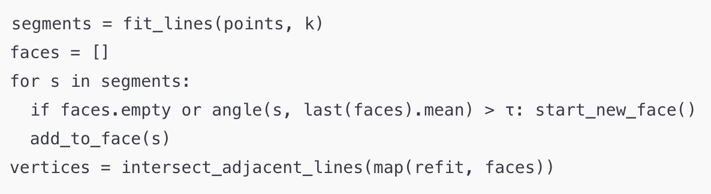

GeoWars — Line-to-Shape Arcade Game
I love deep games—both as a player and a designer. As a player, it’s rewarding to see time invested translate into genuine improvement; as a designer, it’s exciting to craft systems that invite mastery. But I also believe that
depth
shouldn't come from
complexity.
As a programmer, I understand the hidden intricacy behind simple systems; as a designer, I know how feature creep can obscure a game’s core; and as a player, I’ve been frustrated by inscrutable game mechanics.
With this project, I set out to marry accessible mechanics with challenging programming —creating something easy to play but hard to master, and a codebase that’s as elegant as it is engaging.
With this project, I set out to marry accessible mechanics with challenging programming —creating something easy to play but hard to master, and a codebase that’s as elegant as it is engaging.

The Big Picture
I wanted depth without complexity: draw a shape, it becomes a solid you fight with. The hard part was turning messy line strokes into clean polygons robustly and efficiently.
Gameplay demo, showing shacpe creation and multiple turns of combat.
Polygon-from-Sketch Algorithm.
Given an ordered point stream, split it into fixed-size segments, compute each segment’s line of best fit, then grow faces by slope similarity with a tolerance τ. Outlier points are absorbed by segment fitting; sharp corners trigger a new face. For each face, refit a final line and intersect adjacent lines to get polygon vertices.

A dramatically pared-down, top-level pseudocode of the algorithm.
Segment fitting damps noise; comparing angles of lines is more stable than point-wise angles. Pruning outliers is much cheaper over ~20 segments than N points.
Results
Performance
Algorithm runs in O(N) time and space complexity; impact on framerate is negligible regardless of shape size.
Robustness Algorithm has over 97% accuracy for triangles and quadrilaterals (benchmarked over 1k samples).
Robustness Algorithm has over 97% accuracy for triangles and quadrilaterals (benchmarked over 1k samples).
Demo showing the algorithm's tolerance of sub-optimal line drawing.